Yuliang Guo
I am a Principal Scientist at Maven Robotics, working on general-purpose robotic AI for the most challenging industrial tasks. Previously, I was a Lead Research Scientist at Bosch Research in Silicon Valley, where I led a team in 3D vision and physical AI. I received my Ph.D. in Computer Science from Brown University.

ResearchComputer Vision·Physical AI·Robotics — My research focuses on enabling robotic AI systems to learn skills through real-world interaction and generalize across cameras, embodiments, and scenarios. I pursue this through three core pillars:
01
Unified 3D Perception that generalizes across robotic platforms and new environments.
02
Scalable Neural Reconstruction and Generation for end-to-end closed-loop simulation.
03
Generalizable, Continual Robotic Learning for efficient skill acquisition from physical experience.
|
News
2026
Co-Organize CVPR 2026 Workshop on Deployment of Foundation Models for Embodied AI
3DGEER accepted to ICLR 2026
2025
Joined Maven Robotics as Principal Scientist
Invited Panelist, PI2 Workshop 2025
Co-Chair, Robot Mapping 2 session, ICRA 2025
Depth Any Camera accepted to CVPR 2025
|
Publications (show selected / show all by date)(* indicates equal contribution, † indicates corresponding author or project lead) |
|
|
-sight: Unifying Vision-Language-Action and Latent World Modeling
arXiv 2026 [paper] [project page] [code] [video] Z-sight unifies VLA policy learning and latent world modeling directly in its VLM's co-evolving visual token space. Jointly denoising future spatial tokens and continuous actions without pixel generation, it achieves fast, generalizable humanoid loco-manipulation and tabletop control. |
|
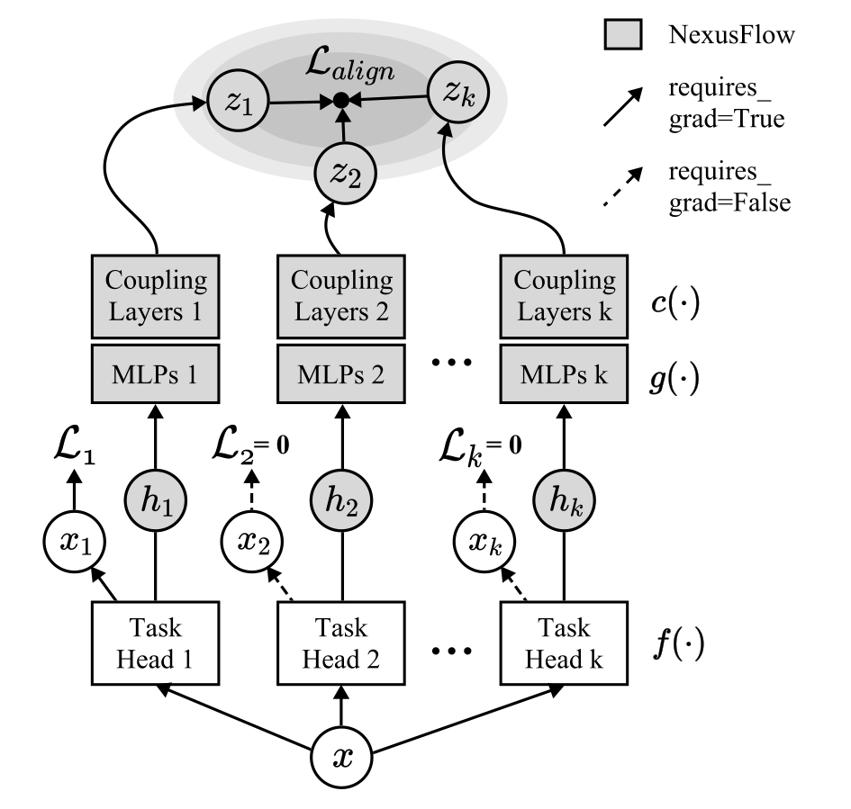 |
NexusFlow: Unifying Disparate Tasks under Partial Supervision via Invertible Flow Networks
CVPR 2026 [paper] [code] [video] Can we learn across multiple tasks when Task 1 data is collected in region A and Task 2 data in region B? We introduce NexusFlow, a plug-and-play framework based on invertible flow networks that is effective for Partially Supervised Multi-Task Learning (PS-MTL) and the joint learning of diverse dense and sparse prediction tasks. |
|
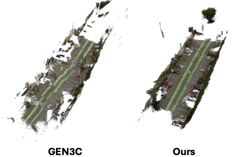 |
Pantheon360: Taming Digital Twin Generation via 3D-Aware 360° Video Diffusion
CVPR 2026 [paper] [project page] [code] [video] Pantheon360 generates controllable 360° videos from sparse panoramic inputs, and user-defined trajectories, with a video diffusion model producing photorealistic outputs. It drastically simplifies digital twin creation while preserving geometric consistency and visual quality. |

|
UniDAC: Universal Metric Depth Estimation for Any Camera
CVPR 2026 [paper] [project page] [code] [video] UniDAC is a universal, domain-agnostic metric depth estimation method that generalizes to any camera. UniDAC is trained solely on perspective images yet generalizes effectively to large-FoV inputs, leveraging a universal model to robustly handle both indoor and outdoor environments. |

|
3DGEER: 3D Gaussian Rendering Made Exact and Efficient for Generic Cameras
ICLR 2026 [paper] [project page] [code] [video] An efficient volumetric Gaussian rendering method redesigned from first principles. Through exact closed-form Gaussian ray integration, a novel particle bounding design, we eliminate projective approximation error and support large-FoV cameras, preserving both exactness and speed in differentiable rendering. |

|
Online Language Splatting
ICCV 2025 [paper] [project page] [code] [video] A fully online system to effectively integrate dense CLIP features with Gaussian Splatting. High-resolution dense CLIP embedding and online compressor learning modules are introduced to serve dense language mapping at realtime (40+ FPS) while retaining open-vocabulary capability for flexible query-based human-machine interaction. |
|
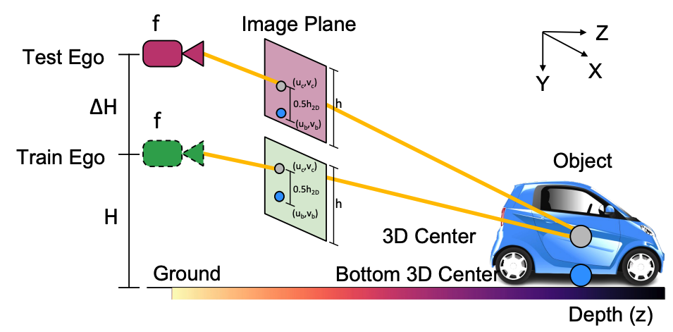 |
CHARM3R: Towards Unseen Camera Height Robust Monocular 3D Detector
ICCV 2025 [paper] [code] Mathematical derivation of consistent depth error trends under camera height variations in Mono3D models. A method generalizable across different camera heights via averaging ego-regressed and ground-based depth estimates. |
|
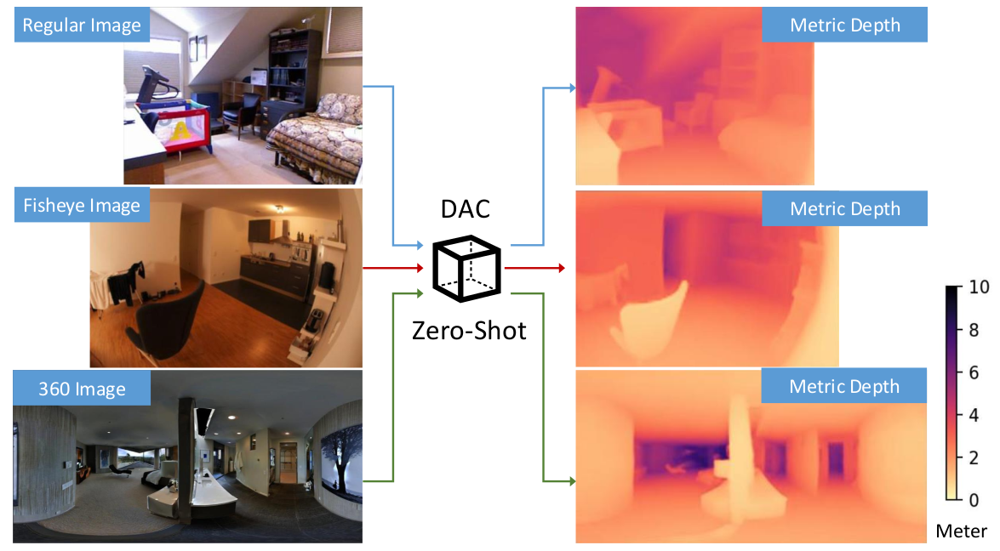 |
Depth Any Camera: Zero-Shot Metric Depth Estimation from Any Camera
CVPR 2025 [paper] [project page] [code] [video] Depth Any Camera (DAC) is a training framework for metric depth estimation that enables zero-shot generalization across cameras with diverse fields of view—including fisheye and 360° images. Tired of collecting new data for every camera setup? DAC maximizes the utility of existing 3D datasets, making them applicable to a wide range of camera types without the need for retraining. |
|
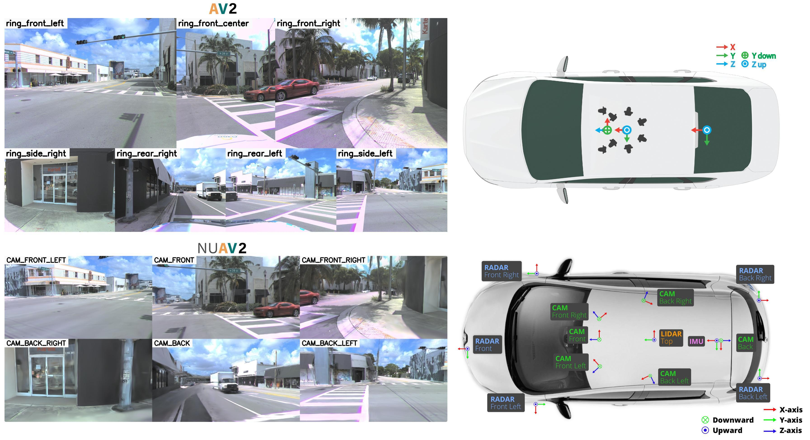 |
MapGS: Generalizable Pretraining and Data Augmentation for Online Mapping via Novel View Synthesis
IEEE IV 2025 [paper] [project page] Using Argoverse 2 (AV2) sensor configurations, we employ Gaussian splatting to synthesize images in the nuScenes (NUSC) setup. We show that training online mapping algorithms from GS simulation helps cross-dataset generalization. |
|
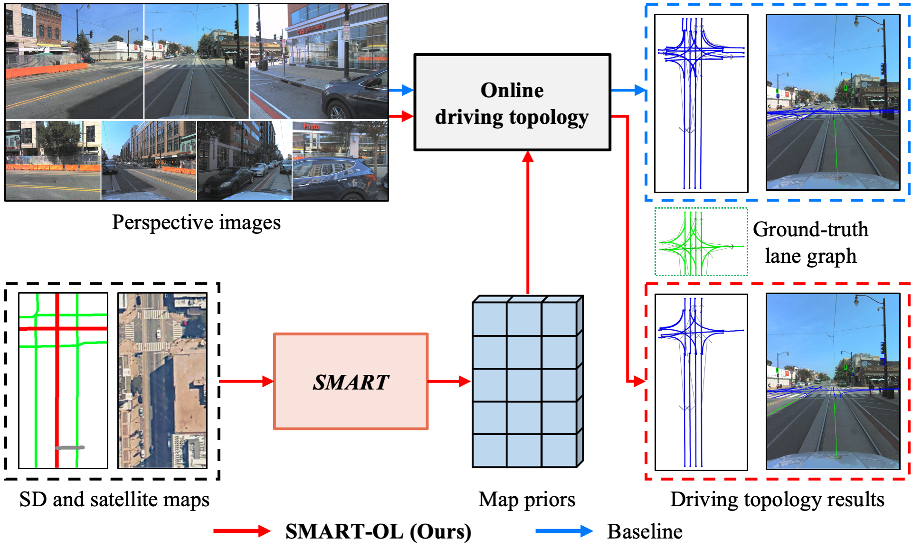 |
SMART: Advancing Scalable Map Priors for Driving Topology Reasoning
ICRA 2025 [paper] [project page] SMART augments online topology reasoning with robust map priors learned from scalable SD and satellite maps, substantially improving lane perception and topology reasoning. |

|
SUP-NeRF: A Streamlined Unification of Pose Estimation and NeRF for Monocular 3D Object Reconstruction
ECCV 2024 [paper] [project page] [code] [video] A monocular object reconstruction framework effectively integrating object pose estimation and NeRF-based reconstruction. A novel camera-invariant pose estimation module is introduced to resolve depth-scale ambiguity and enhance cross-domain generalization. |
|
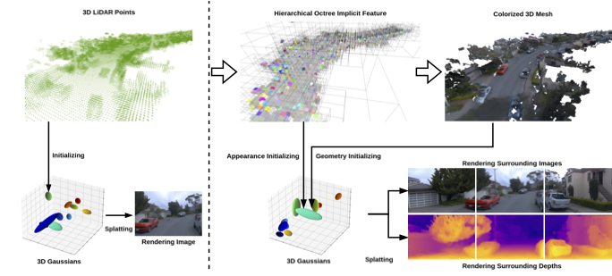 |
TCLC-GS: Tightly Coupled LiDAR-Camera Gaussian Splatting for Autonomous Driving
ECCV 2024 [paper] [video demo] An advanced Gaussian Splatting method effectively fusing Lidar and surrounding camera views for autonomous driving. The method uniquely leverages an intermediate occ-tree feature volume before GS such that GS parameters can be initialized from feature-volume-generated 3D surface more effectively. |
|
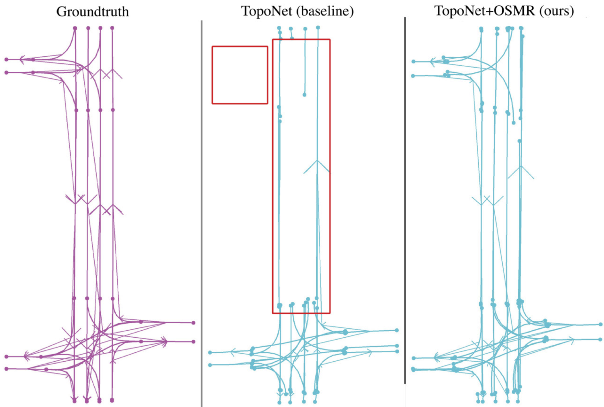 |
Enhancing Online Road Network Perception and Reasoning with Standard Definition Maps
IROS 2024 [paper] [project page] An effective framework leveraging lightweight and scalable priors-Standard Definition (SD) maps in the estimation of online vectorized HD map representations. |
|
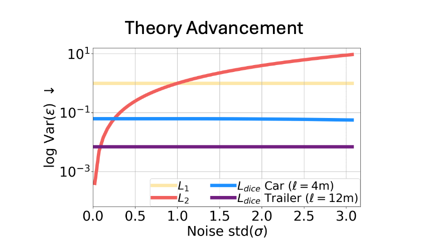 |
SeaBird: Segmentation in Bird’s View with Dice Loss Improves Monocular 3D Detection of Large Objects
CVPR 2024 [paper] [code] [project page] A mathematical framework to prove that the dice loss leads to superior noise-robustness and model convergence for large objects compared to regression losses. A flexible monocular 3D detection pipeline integrated with bird-eye view segmentation. |

|
Behind the Veil: Enhanced Indoor 3D Scene Reconstruction with Occluded Surfaces Completion
CVPR 2024 [paper] [project page] A neural reconstruction method enabling the completion the occluded surfaces from large 3D scene reconstrucion. A milestone in automating the creation of interactable digital twins from real world. |

|
3D Copy-Paste: Physically-Plausible Object Insertion for Monocular 3D Detection
NeurIPS 2023 [paper] [code] [project page] A physically plausible indoor 3D object insertion approach to automatically "copy" virtual objects and "paste" them into real scenes. |


|
Symmetry and Uncertainty-Aware Object SLAM for 6DoF Object Pose Estimation
CVPR 2022 [paper] [code] A keypoint-based object-level SLAM framework that can provide globally consistent 6DoF pose estimates for symmetric and asymmetric objects. |
|
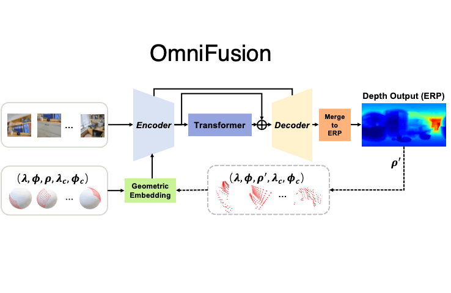 |
OmniFusion: 360 Monocular Depth Estimation via Geometry-Aware Fusion
CVPR 2022Oral [paper] [code] The first vision transformer approach to handle 360 monocular depth estimation with spherical distortion. Novel designs include tangent-image coordinate embedding and geometry-aware feature fusion. |
|
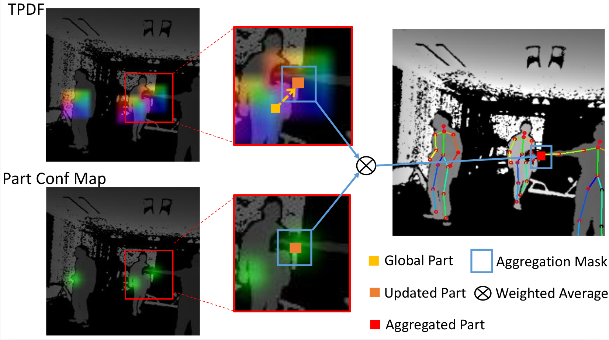 |
PoP-Net: Pose over Parts Network for Multi-Person 3D Pose Estimation from a Depth Image
WACV 2022 [paper] [code] [dataset] A real-time method to predict multi-person 3D poses from a depth image. Introduce new part-level representation to enables an explicit fusion process of bottom-up part detection and global pose detection. A new 3D human posture dataset with challenging multi-person occlusion. |
|
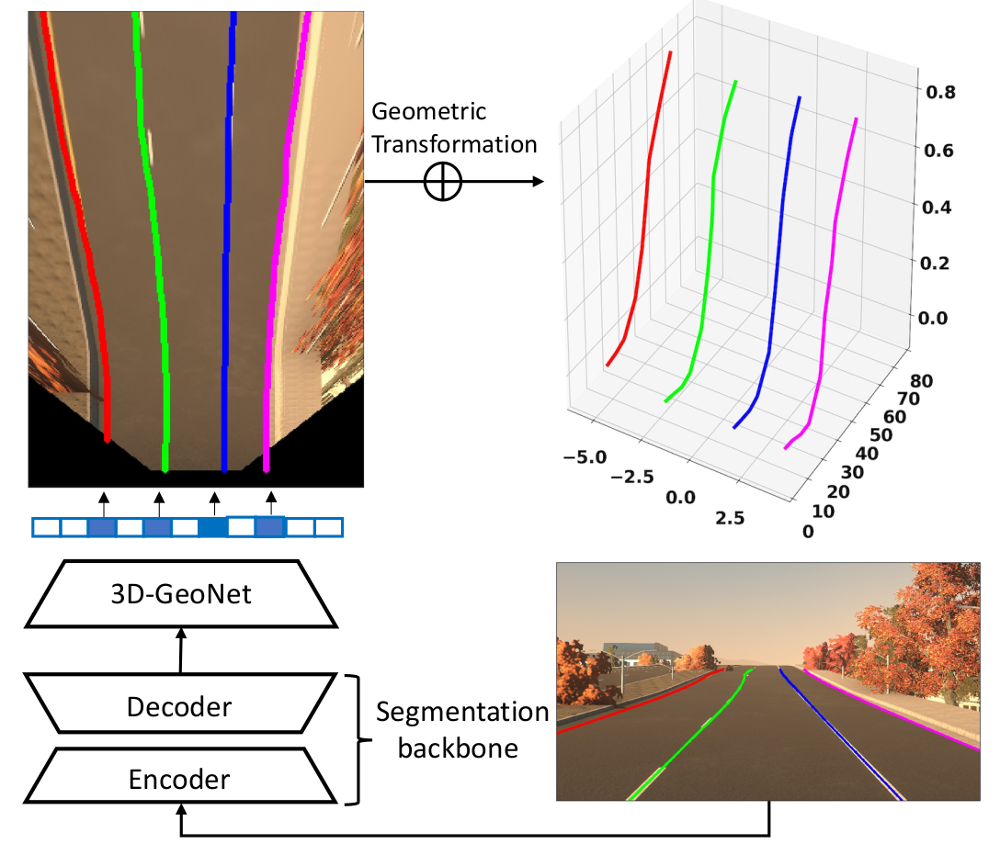 |
Gen-LaneNet: A Generalized and Scalable Approach for 3D Lane Detection
ECCV 2020 [paper] [code] [dataset] A pioneer work in predicting 3D lanes from a single image with high generalization to novel scenes. A 3D lane synthetic dataset is introduced. |
|
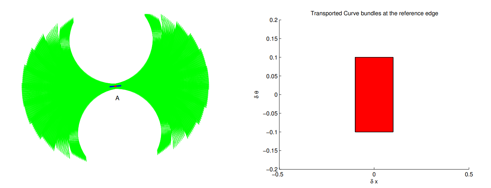 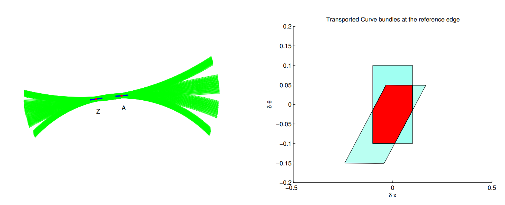 |
Differential Geometry in Edge Detection: Accurate Estimation of Position, Orientation and Curvature
TPAMI 2018 [paper] [code] [dataset] Numerically robust image filters and symbolic curve models are introduced to precisely estimate differential geometry attributes associated with image edges, including localization, orientation, curvature, edge topology. |
|
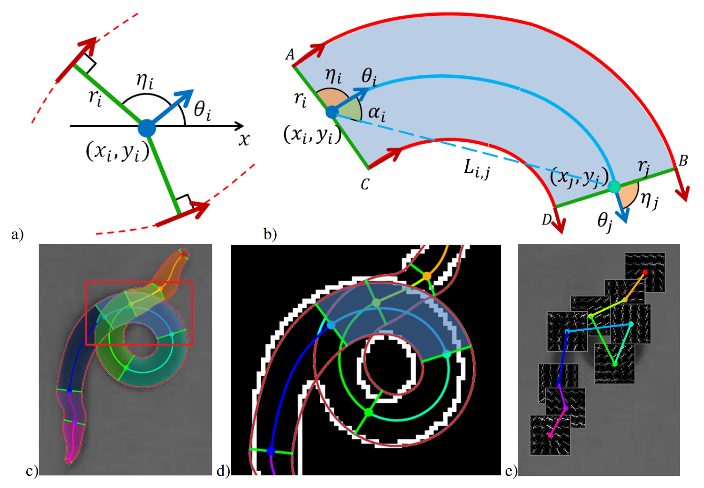 |
Robust Pose Tracking with a Joint Model of Appearance and Shape
arXiv 2018 [paper] A joint model of learned part-based appearance and parametric shape representation to precisely estimate the highly articulated poses of multiple laboratory animals. |
|
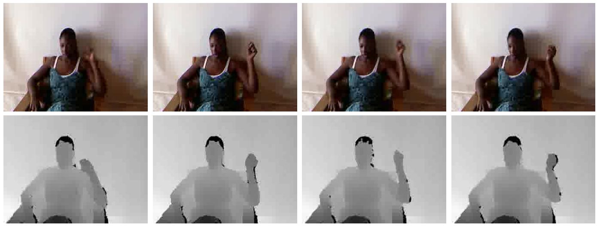 |
BoMW: Bag of manifold words for one-shot learning gesture recognition from kinect
IEEE TCSVT 2017 [Paper] One-shot learning gesture recognition on RGB-D data recorded from Microsoft Kinect. A novel bag of manifold words (BoMW) based feature representation on sysmetric positive definite (SPD) manifolds. |
|
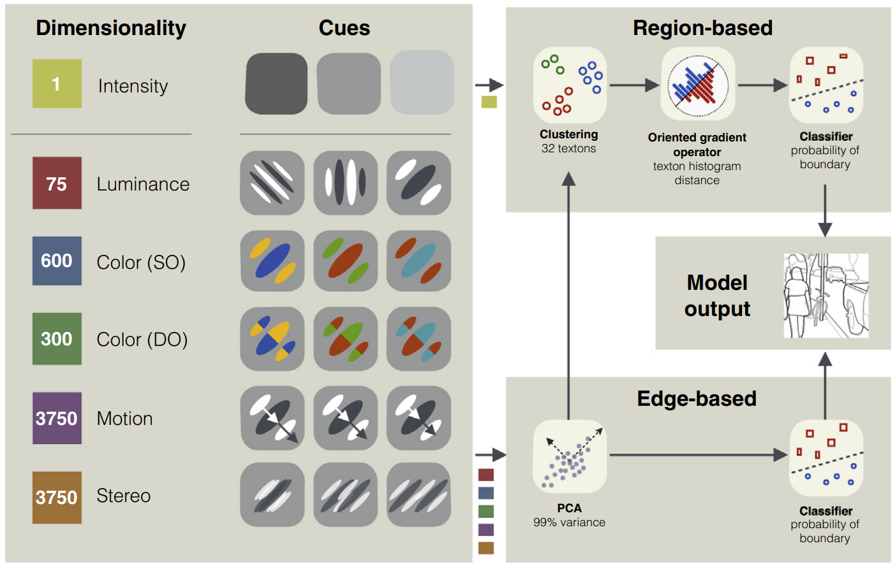 |
A Systematic Comparison between Visual Cues for Boundary Detection
Vision Research 2016 [paper] [dataset] This study investigates the relative diagnosticity and the optimal combination of multiple cues (we consider luminance, color, motion and binocular disparity) for boundary detection in natural scenes. A multi-cue boundary dataset is introduced to facilitate the study. |
|
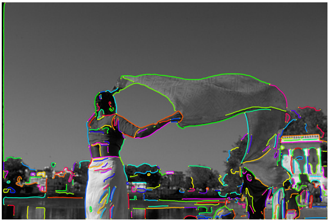 |
A Multi-Stage Approach to Curve Extraction
ECCV 2014 [paper] [code] A multi-stage approach to curve extraction where the curve fragment search space is iteratively reduced by removing unlikely candidates using geometric constrains, but without affecting recall, to a point where the application of an objective functional becomes appropriate. |
Experience
2025 — now
Principal Scientist·Maven Robotics·Santa Clara, CA
2021 — 2025
Lead Research Scientist·Bosch Research·Sunnyvale, CA
2019 — 2020
Senior Research Scientist·OPPO Research·Palo Alto, CA
2018 — 2019
Senior Research Engineer·Baidu Apollo·Sunnyvale, CA
2012 — 2018
Ph.D. Student·Brown University·Providence, RI
|